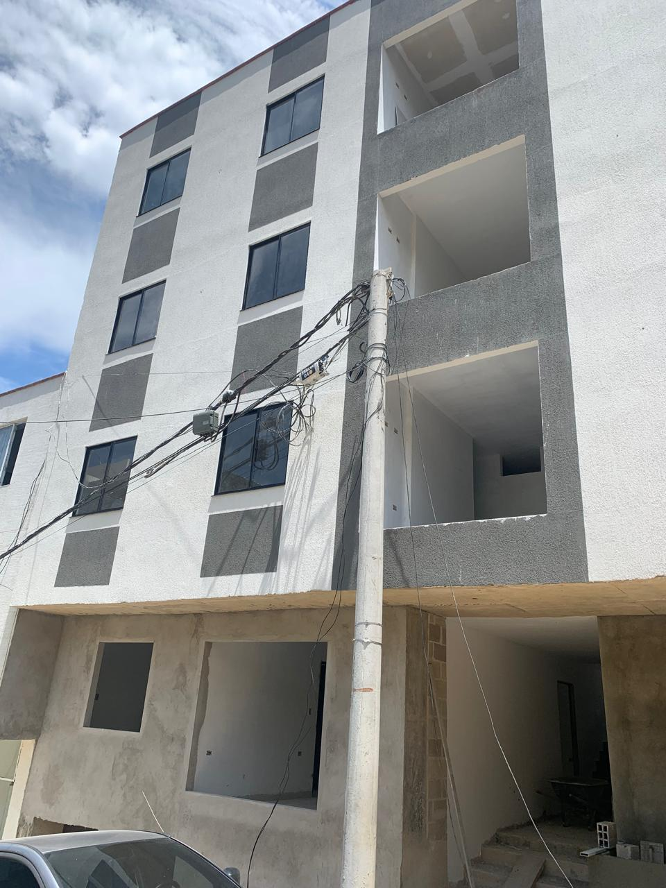

Proyecto residencial
Edificio Multifamiliar MonteReal
Resumen ejecutivo
MonteReal es un proyecto de edificación multifamiliar de 5 niveles con parqueadero y 11 apartamentos, concebido para responder a exigencias de seguridad estructural, funcionalidad residencial y eficiencia constructiva. El diseño se desarrolló en un contexto de alta sismicidad, lo que implicó un especial cuidado en la definición del sistema resistente, el control de derivas y la regularidad estructural. Adicionalmente, las condiciones geotécnicas complejas del sitio exigieron una coordinación rigurosa entre la superestructura y la solución de cimentación, buscando garantizar un comportamiento adecuado de la edificación tanto en servicio como ante eventos sísmicos. El resultado fue una propuesta estructural robusta, compatible con la arquitectura del proyecto y alineada con los criterios de diseño exigidos por la normativa colombiana.
Contexto y principales desafíos
- Uso: Edificación residencial multifamiliar.
- Configuración: 5 niveles, parqueadero y 11 apartamentos.
- Condición sísmica: Proyecto ubicado en zona de alta sismicidad.
- Condición geotécnica: Presencia de retos asociados al suelo y a la interacción suelo-estructura.
- Desafío principal: Integrar seguridad sísmica, viabilidad estructural y funcionalidad arquitectónica en un mismo sistema.
Solución estructural
La solución estructural fue planteada con el objetivo de proporcionar rigidez lateral suficiente, continuidad resistente y una adecuada transmisión de cargas verticales hacia la cimentación. El edificio fue concebido con una configuración estructural coherente con su uso multifamiliar, buscando compatibilidad con la distribución arquitectónica de apartamentos, circulaciones y parqueadero. El diseño priorizó la regularidad en planta y elevación, la correcta ubicación de elementos resistentes y la racionalización de dimensiones estructurales para mejorar tanto el comportamiento sísmico como la factibilidad constructiva del proyecto.
Datos técnicos del proyecto
- Nombre del proyecto: Edificio Multifamiliar MonteReal
- Tipo: Vivienda multifamiliar
- Número de niveles: 5
- Programa arquitectónico: Parqueadero + 11 apartamentos
- Material estructural principal: Concreto reforzado
- Sistema estructural: Estructura aporticada y/o combinada según requerimientos del diseño
- Condición de diseño: Alta sismicidad y complejidad geotécnica
- Normativa de referencia: NSR-10
Enfoque de análisis y desempeño
El análisis estructural se orientó a verificar la respuesta global del edificio frente a cargas gravitacionales y laterales, prestando especial atención al desempeño sísmico del sistema resistente. Se revisaron aspectos como la distribución de rigidez, el control de desplazamientos, la estabilidad global y la compatibilidad entre la configuración arquitectónica y la respuesta estructural esperada. Debido a las condiciones geotécnicas del sitio, el enfoque técnico también consideró la necesidad de una solución de cimentación consistente con las exigencias del terreno, reforzando la seguridad y confiabilidad del proyecto.
Entregables
- Modelo analítico estructural del edificio
- Análisis estructural bajo cargas gravitacionales y sísmicas
- Diseño de elementos principales de la superestructura
- Planos estructurales del proyecto
- Documentación técnica para coordinación y construcción